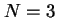
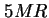
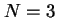
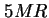
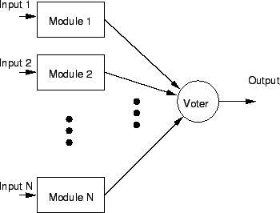
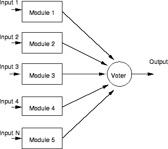

Next: ระบบตรวจสอบความเสียหาย
Up: ระบบที่คงทนต่อความเสียหาย
Previous: ระบบ Triple Modular Redundancy
Contents
Index
ระบบ N Modular Redundancy
ระบบ TMR สามารถเขียนในรูปทั่วไปได้เป็นในรูปของระบบ  ใน
ใน  โดยในระบบ TMR ค่า  และ ถ้าเราเลือกค่า เป็นจำนวนคี่ ก็จะสามารถหาเสียงส่วนใหญ่ได้ การต่อเชื่อมของระบบ ใน (NMR)แสดงในรูป 9.11 ข้อดีของระบบ ใน คือสามารถยอมให้ระบบมีการเสียหายมากกว่าหนึ่ง ตัวอย่างเช่น ระบบ  ในรูป 9.12 ที่สามารถยอมให้มีโมดูลเสียได้ถึงสองโมดูล
โดยในระบบ TMR ค่า  และ ถ้าเราเลือกค่า เป็นจำนวนคี่ ก็จะสามารถหาเสียงส่วนใหญ่ได้ การต่อเชื่อมของระบบ ใน (NMR)แสดงในรูป 9.11 ข้อดีของระบบ ใน คือสามารถยอมให้ระบบมีการเสียหายมากกว่าหนึ่ง ตัวอย่างเช่น ระบบ  ในรูป 9.12 ที่สามารถยอมให้มีโมดูลเสียได้ถึงสองโมดูล
Figure 9.11:
ระบบ N Modular Redundancy (NMR)
|

|
การใช้งานของระบบ NMR ต้องการฮาร์ดแวร์มากขึ้น ซึ่งการใช้งานระบบดังกล่าวจำเป็นต้องคำนึงถึง การใช้พลังงาน, น้ำหนัก, ค่าใช้จ่าย, และขนาด ซึ่งเป็นตัวกำหนดค่า N ในระบบ NMR
Figure 9.12:
ระบบ 3 ใน 5-5MR
|

|
Vara Varavithya
2002-03-09